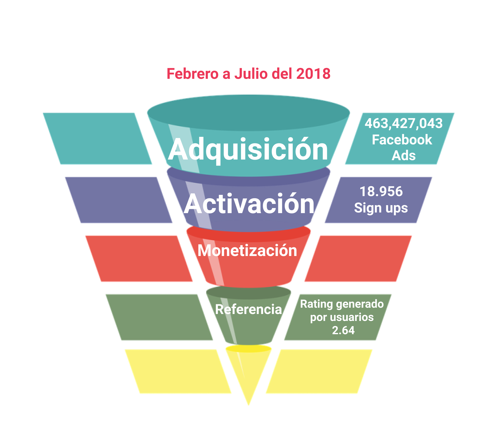
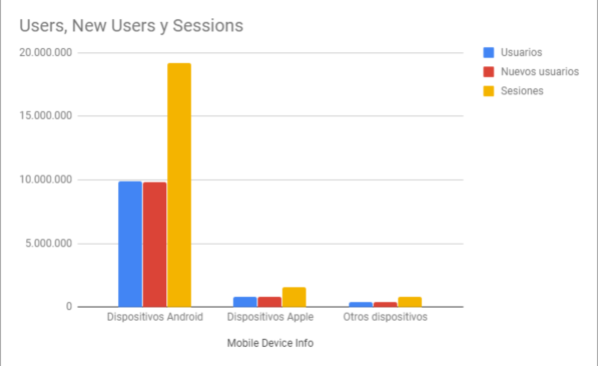

Rediseño de aplicación bancaria

Objetivos iniciales del proyecto
Uno de los bandos más importante del país me ha encomendado, como UX designer, el proyecto de rediseño de su nueva aplicación móvil, donde sus usuarios pueden visualizar sus gastos mensuales y crear metas de ahorro. Es necesario llevar a cabo un diagnóstico del estado actual de la aplicación, evaluar su desempeño y proponer los cambios necesarios para optimizar el producto.
Problemas encontrados y próximos pasos para el banco con respecto al app
El proceso de rediseño de esta aplicación implica el análisis del trabajo previo, el cual inevitablemente tendrá áreas de mejora a ser resueltas con una nueva propuesta e iteración continua de la mano del cliente y los usuarios.
Para llevar a cabo este proceso es primordial tener el feedback de los usuarios, identificar los cambios y mejoras priorizando aquellos que agregan mayor valor a la experiencia de los usuarios y empatan con los objetivos del cliente.
Después del análisis heurístico realizado a la landing page y al flujo actual de la aplicación desarrollada en iOS, así como el análisis llevado a cabo sobre la data proporcionada, se identifican las siguientes áreas de mejora:
Durante los 6 meses que la aplicación ha estado disponible en el mercado el porcentaje de conversión entre la fase de adquisición (por medio de Facebook Ads) y la fase de activación (usuarios que han descargado la app y se han registrado para hacer uso) se traduce en un 0.0040903%. Lo cual sugiere lo poco recomendable que sería duplicar el presupuesto destinado a generar anuncios de Facebook. En cambio se sugiere invertir el presupuesto de marketing en la segmentación de los anuncios de acuerdo al público que se intenta adquirir, especificando en los anuncios el sistema operativo con el cual opera la aplicación y las funcionalidades que ésta contiene, desarrollando un onboarding que favorezca el aumento porcentual de cada etapa de conversión, sin duplicar el presupuesto destinado a anuncios de Facebook.
Por otra parte, de acuerdo a la gráfica proporcionada con la data de uso del app durante los últimos 6 meses, encontramos que el acceso a la misma desde dispositivos Android, excede en un 1,224% al realizado desde dispositivos iOS. Por lo que se sugiere invertir en el desarrollo de un mínimo producto viable que incluya los apartados de Movimientos y Ahorros para sistemas operativos Android.
En cuanto a las visitas generadas por los diferentes apartados que ofrece la aplicación, dentro de la data únicamente se registran los correspondientes a los apartados de Gastos y Ahorros, en el primero se concentran un 4.30% de las sesiones realizadas, mientras que en Ahorros se registran un 0.2% de las mismas. De acuerdo al testeo realizado el apartado de Gastos resultó menos atractivo que el de Movimientos, tomando esto en cuenta y teniendo en mente el objetivo de incentivar el ahorro por parte del banco, se sugieren cambios dentro de la visualización de datos dentro de cada uno de los apartados y el añadir elementos de gamificación dentro del apartado de Ahorro que contribuyan a su incentivación.
He identificado las fases de activación y recomendación como aquellas prioritarias para cumplir con los objetivos propuestos por el negocio, es decir, fidelizar a sus cuentahabientes y fomentar el ahorro por medio de la aplicación. En el siguiente apartado elaboraré sobre las modificaciones necesarias a realizar dentro del flujo del app.
Análisis heurístico
Landing Page
El anuncio de Facebook lleva al usuario a la Landing Page de la aplicación, misma que contiene 2 CTA, el primero "Descárgala ahora" lo lleva a un formulario de llenado con la instrucción "Déjanos tus datos y recibe el link de descarga." Mismo que no se hace llegar al usuario, en cambio le redirecciona a una página de agradecimiento y posteriormente a la App Store donde el usuario podrá descargar la aplicación.
Hasta este punto no existe un onboarding claro para el usuario, no se le informa en qué consiste la aplicación y qué valor podría aportarle su uso. Sobre el branding, no se encuentran elementos diferenciadores de la identidad del banco al que pertenece la aplicación o de una experiencia distintiva que se sostenga a lo largo de la aplicación.
Verbalizaciones obtenidas durante el testeo con usuarios:
- "Me gusta que la landing sea muy sencilla, que sea muy fácil de detectar, los colores son muy de banco, van de acuerdo al banco."
- "¿Es en esta parte o en la de arriba? Veo que tienes dos veces el mismo botón para hacer la operación, y el de arriba me dirige abajo."
- "Me gusta más que las cosas que son la función de la aplicación las vea apenas entre y eso no está. Me invitas a descargarla pero no me das el cómo hacerlo, controla tu dinero, pero algo que me diga de una vez qué es lo chingonsísimo de una aplicación y por qué la tengo que bajar."
App Store
Dentro de la App Store nos encontramos con un eslogan distinto al usado dentro de la Landing Page, los colores y el logo de la aplicación son consistentes. Aunque es la séptima aplicación financiera, su rating es de 2.64 estrellas lo cual denota una falta de satisfacción con el producto, ya que este rating se basa en la calificación generada por cada usuario, por lo que me parece prioritario mejorar este rating y cambiar la edad de uso sugerida a 18+, ya que por el momento se encuentra en personas mayores de 9 años. Hasta este punto no ofrece más información de la ya mostrada en la landing page, el onboarding no queda claro para los usuarios.
Verbalizaciones obtenidas durante el testeo con usuarios:
- "Me estás dirigiendo a la app de la aplicación. Uso un teléfono de gama media, Android."
- "¿Si no tengo cuenta no importa? ¿Es exclusiva para Iphone?"
Sign Up
Dentro del sign up, de acuerdo al testeo realizado con usuarios, es necesario mejorar la visibilidad del estado del proceso, prevenir posibles errores, reconocer y recuperarse de errores, y ofrecer ayuda al usuario sobre lo que debe hacer en cada etapa del sign up mejorando los formularios y las instrucciones de llenado, así como la acción necesitada en uno de los pasos.
Verbalizaciones obtenidas durante el testeo con usuarios:
- "¿No hay un paso antes de hacer un registro? ¿O cómo sabe tu aplicación que soy un usuario del banco? Te piden cierto registro en el banco para solo llegar e ingresar ciertos datos."
- "Agregar foto, está bien pero nunca lo hago, no le veo sentido para qué el banco lo tiene, suficientes datos personales tienen, no veo qué uso puedan darle."
- "Creo que podría ser más inseguro que la felicidad que tendría el poner mi foto allí."
- "Me llegó un código en mi teléfono y debería salir aquí mismo. No había visto la letrita."
- "¿Número de cuenta es mi CLABE o qué? ¿Cuál cuenta, la de la aplicación o de mi cuenta bancaria? ¿Cómo sabe qué banco es?"
- "¿Me llegó un mail de confirmación? Me gustaría, es mi cuenta bancaria, no tengo problema en meter más mis datos, pero es la primera vez que uso algo así."
- "A lo mejor otra tipografía, se pierde un poco, yo soy muy ciega. No quiero poner mi foto, hacerlo más tarde. Eso de la huella me gusta, yo que soy muy paranoica, el que puedas poner tu huella para acceder a tu cuenta me da más seguridad y confianza. Yo sé que no todos los teléfonos lo tienen, pero que tengan para identificarla es un punto extra, da mucha confianza."
- "No sé cómo se llama esta app."
- "¿Por qué otra vez me dice que acepto los términos, son distintos cada vez? No me queda claro."
- "No me parece ese avatar porque tiene género, o que lo tuviera de acuerdo a mi género, no me lo pide entonces no sé cómo va a saber."
- "Me gustaría que todos los campos tuvieran datos dummie para saber cómo tiene que ser. Quisiera una ayuda que me dijera cómo tiene que ser la contraseña, que me diga de qué tiene que estar hecha esa contraseña."
- "Me abre el carrete, no pide permiso para acceder a mi carrete ¿puedo elegir la que sea? Si no lo lleno ahorita espero que más adelante pueda hacerlo de manera fácil, vamos a hacerlo después, ah no puedo, porque en tu flujo de navegación no puedo arrepentirme."
- "¿Llené mi nombre? ¿De dónde lo saca? ¿De sus datos de cuenta?"
Pantalla de inicio. HOME
Muestra un mensaje de bienvenida con el nombre del usuario, una imagen de la tarjeta del mismo ocupa 3/4 de la pantalla, una campana en la esquina superior derecha anuncia las notificaciones de la app, el saldo disponible se encuentra abajo de la tarjeta sin especificar la moneda o un desglose del mismo. En la parte inferior se muestra un botón con tres puntos que da acceso al menú con los distintos apartados de la aplicación, mismos que no conoce el usuario, en la navbar se encuentra un menú hamburguesa que incluye la foto del usuario, si la ha agregado, además de su nombre, la fecha y hora de su última conexión. Hasta este punto no se ha ofrecido un onboarding para el usuario.
Verbalizaciones obtenidas durante el testeo con usuarios:
- "Estaría bien un ícono donde pudieras regresar a la pantalla principal, porque con el atrás llega un momento en el que te sales de la aplicación."
- "Los tres puntos no me dicen realmente qué son, no me agradó. En vez de ser unos puntos, algo que de a entender que te lleva o te regresa a tu menú."
- "¿En el menú no tienes nada verdad? El menú está vacío, sólo puedo ver mi cuenta. Pensé encontrar editar mi perfil, notificaciones, ayuda en línea, teléfono de la aplicación por si hay algo que no esté viendo aquí y me pueda comunicar con mi banco, no tenga que ir a buscar en internet el número de mi banco, o algo así como preguntas frecuentes."
- "Pensé que el botón (de tres puntos) era para arrastrarlo."
- "Monto total en la parte de inicio, a lo mejor cuenta con la parte de ahorro, que aparte diga la * cantidad real para gastar y la real total que se tiene."
- "Menú hamburguesa no hay nada que me sea útil de aquí. La última conexión no me importa. Me gusta que me ponga la tarjeta, me hace claro que esta es mi tarjeta."
- "Monto total en la parte de inicio, a lo mejor cuenta con la parte de ahorro, que aparte diga la cantidad real para gastar y la real total que se tiene."
Movimientos
Se muestra el saldo disponible para el usuario sin especificar la moneda, existe un buscador del cual no puede hacerse uso dentro del prototipo, no quedan claros cuáles son los parámetros para realizar una búsqueda. Pueden visualizarse los gastos por mes, se diferencian los gastos con color rojo y en verde los depósitos, es necesario hacer scroll para conocer la lista de movimientos, puede realizarse un desglose del cargo donde la app se comunica con el usuario en inglés y español.
Verbalizaciones obtenidas durante el testeo con usuarios:
- "Movimientos, me gusta la transición, puedo elegir el mes, el saldo disponible me gusta."
- "Esto sí es muy importante, los movimientos como cuando uso tarjeta, no llevo un control de lo que gasto, está padre ver en qué gastaste, de hecho hasta ahí te puedes dar cuenta en las tonterías que gastas tu dinero."
- "Verificar si hay un cobro que no reconozcas para saber cuándo y en qué tienda se realizó. Esa parte me gusta."
- "Ponen el gasto como en rojo negativo, me causa un poco de ansiedad ¿Es tarjeta de débito? ¿es un saldo a favor no? Está bien la diferencia de color, pero no sé si sea la opción el rojo, diferencia de ganancia y pérdida."
- "Movimientos ¿por qué está en medio (el botón de 3 puntos)? No sé por qué está en medio, no puedo regresar ¡ah!"
- "Si quiero buscar no me permite buscar, poder buscar un cobro por fecha u hora."
Ahorros
Al igual que en cada uno de los apartados 1/4 de la pantalla se encuentra ocupada por una imagen y color que los distinguen, se encuentra un buscador que tampoco aclara la manera en la que se puede realizar una búsqueda. Cada meta de ahorro muestra la cantidad meta y el porcentaje logrado, además de un botón con un ícono de monedas con la leyenda "Crear cuenta" el cual no aclara al usuario su función de crear una nueva meta de ahorro, al hacer clic muestra un formulario con los datos de título, donde por primera vez el usuario puede agregar texto y emojis, monto, fecha que no aclara si es de inicio o finalización, y periodicidad, sólo al terminar de llenar los campos el botón de "Continuar" se enciende.
En la siguiente pantalla la app se comunica con el usuario con texto y emojis, se le informa al usuario sobre la cantidad que ahorrará, misma a la que no ha accedido en ninguna parte del flujo, así como la cantidad de semanas en las que cumplirá su meta. Por otra parte se le informa al usuario cuándo y en qué horario se realizará el ahorro, así como la cuenta de la cual se deducirá. No indica la moneda del monto total a ahorrar o una opción donde poder modificar los datos proporcionados en caso de error o cambio de opinión, sólo muestra una opción afirmativa a la pregunta "¿deseas confirmar?" Después de crear la meta de ahorro no existe opción para poder suspenderla momentáneamente, por cierto periodo de tiempo o cancelación de la misma.
Verbalizaciones obtenidas durante el testeo con usuarios:
- "Me gusta que cambia el fondo para diferenciar cada apartado."
- "Son como metas específicas para cosas, crear una cuenta ¿cómo crear una cuenta? ¿es un nuevo ahorro o qué? No me parece que se debería llamar cuenta, sino crear meta, me gusta que el botón está apagado cuando lo lleno. Porque para mí es cuenta de dinero."
- "Yo no decidí eso, porque no tenía claridad de que fueran a ser 75 pesos, no me gusta cómo me habla la aplicación. *Me gustaría que me dijera para llegar a tu meta tienes que ahorrar 75 pesos en 16 semanas, me gustaría que me * presentara la cantidad que voy a ahorrar según la periodicidad."
- "El saber para qué estás ahorrando y cuánto llevas acumulado, eso me gusta. A lo mejor con un círculo y que vaya avanzando, para hacerlo más llamativo visualmente hablando, me es funcional, pero a las personas nos gusta jugar."
- "Estaría padre que hubiera dos tipos de presentación, en vez de la imagen hacer más funcional el espacio de arriba y que arriba aparezca la gráfica o el círculo, estás aprovechando el espacio. Ya no hay necesidad de otro click para la opción de la gráfica, si no que tienes las dos."*
- "Si ya desde un inicio la aplicación lo separa solito, está padre porque ya sabes que la aplicación lo está haciendo."
- "Ahorros. Un mensaje motivacional de ya casi llegas, no sé, esto es mi Excel, lo que a mi me gustaría poner es cuánto llevo y cuánto me falta, no en porcentaje, si no en cuánto llevo de dinero."
- "Intuyo que crear una cuenta es como crear otra cuenta dentro del banco, pero no me parece que sea para una meta de ahorro.
- "En ahorros me causa curiosidad, es como un apartado que puedo realizar de mi cuenta. Tendría que ver mis ingresos primero y mis gastos, y de mis gastos hacer una reserva de saldo para emergencias y otro para la compra de algo que requiera o vacaciones. De ahí sacaría eso, vería los sobrantes y lo mandaría a este tipo de apartado."
- "¿En qué momento puedo pausar el ahorro? Y después reanudarla."
- "¿Qué hace crear una cuenta? Esto de tenerlo semanal, quincenal está bien, eso de establecerlo por fechas se me hace bueno. Es bueno tener previsto cuándo lo van a descontar en el horario."
- "La parte de ahorros es la que más me gustó. Si en algún momento llegas a necesitar el dinero poder tomarlo."
Gastos
Este apartado muestra los gastos realizados por apartados, la opción de búsqueda presenta el mismo problema que en los otros apartados. En cuanto a las categorías en las que se separan los gastos del usuario, no queda claro si cada usuario podrá personalizarlo a su conveniencia, ingresando los gastos realizados de manera manual o bien se almacenan de manera automática dentro de las categorías sugeridas, pueden visualizarse por mes y es necesario hacer scroll para conocer todos los gastos, no es posible acceder a un desglose de cada una de las categorías para confirmar los datos presentados."
Verbalizaciones obtenidas durante el testeo con usuarios:
- "Gastos es muy agresivo, lo abriría por curiosidad y no lo volvería a ver nunca. Habría que cambiarle el nombre, a algo no tan duro y tan cruel."
- "Faltaría una opción de ver transacciones pendientes, o transacciones pendientes por procesar. Como cuando la terminal le falla a un comercio, hace más fácil reclamar en el momento para saber si la transacción pasa o se procesa."
- "Igual la imagen no me convence, podrían aprovechar y hacer una gráfica. Eres más consciente de que estás haciendo esos gastos."
- "No sé si está bien que se llame gastos, porque engloban por aspectos, no sé qué tanto esté bien el nombre, me imaginaba otra cosa, por la representación. Los apartados están muy padres, pero se tendría que cambiar el nombre, porque es algo que no esperaba, puede ser confuso. La de movimientos se me hace que abarca gastos."
- "Si es solamente de budget no me da tiempo de llevarla, si estás tranquilo la llevas, pero entras en un rush de trabajo y olvidas usar la aplicación. Cualquier cosa que se maneje lo más solita posible y me diga qué hacer, más que tener que llevar todos los días los gastos."
Observaciones generales y funcionalidades sugeridas de acuerdo a testeos
La aplicación resulta intuitiva, fácil de manejar, visualmente agradable, no genera una sobrecarga cognitiva con exceso de información o íconos con una variedad de funcionalidades.
Verbalizaciones obtenidas durante el testeo con usuarios:
- "Que me diga cómo mover mi dinero, que me diga, no sé si esto sea legal, hemos detectado que tienes un dinero ahí podrías meterlo aquí o eso búscate un asesor financiero."
- "Todo es como pasado, todo esto está basado en cosas que importan si vas a revisar lo que hiciste o no hiciste, pero si quieres hacer otra cosa no está claro el modo de hacer algo."
- "En cuestión de datos y ahorros me encantaría ver una gráfica de cómo voy, una relación de cómo me gaste el flujo. Un reporte así me encantaría muchísimo, porque le puedo echar a ojo de buen cubero cómo voy."
- "Chat sí lo usaría, cuando un problema sé que tengo que llamar para solucionarlo, llamo y son como 40 minutos y me dice ah no desde la aplicación puede hacerlo, entonces el problema es que no sé para qué es cada cosa, en el chat ¿dónde puedo resolver eso? Me gustaría el chat para verificar si puedo resolverlo ahí o tengo que ir a algún lado. Estaría súper bien."
- "Podría tener tener bonificaciones al usarla."
Mejoras y modificaciones
Landing Page
Áreas abordadas durante el rediseño:
- Onboarding. Informar al usuario sobre las funcionalidades con las que cuenta la aplicación, se le introduce a Bebot quien será parte de su experiencia guiada, sencilla y rápida para llevar a cabo metas de ahorro automatizadas. De la misma manera se numeran los pasos con los que podrá llevar a cabo las acciones deseadas para integrar la sensación de rapidez y facilidad de uso de la aplicación.
- Call to action. Hacerles claros, visibles y posicionados de manera jerarquizada llevando al usuario a llevar la acción deseada.
- Branding y UX Writing. Desarrollar el tono y personalidad de la marca, mismo del que forma parte Bebot con una apariencia amigable y confiable. Las fotografías usadas mantienen la paleta de colores identificada anteriormente por los usuarios como referente a una institución bancaria, se usaron fotografías que representaran escenarios amigables y aspiracionales acordes a las funcionalidades de la aplicación. Se busca crear un look and feel amigable, identificable y juvenil, que genere cercanía entre el usuario y el banco, sin dejar de lado el aspecto corporativo del mismo.
Para su rediseño realicé un testeo A/B con copys, llamados a la acción y fotografías distintas, esta fue la landing page resultante con las mejoras señaladas durante el testeo (los diseños testeados pueden ser encontrados en el link del apartado Anexos).
Mapa de calor
Onboarding
Conformado por tres vistas a manera de tutorial durante las cuales se le informa al usuario sobre las principales funcionalidades de la aplicación, así como el valor que aportan al aspecto financiero de su vida. Dentro del onboarding se usa la iconografía de los distintos apartados (ahorro, gastos, movimientos) para que el usuario se familiarice con los distintos elementos que encontrará dentro de la aplicación.
Se integra como un paso anterior al Sign up de manera que no quite excesivo tiempo al usuario y apunte a explicarle el valor agregado de la aplicación, por lo que se hace uso de imágenes que continúan con el tono amigable y de cercanía que se desea generar con el usuario.
Después del testeo realizado se adaptaron los copys para mantener la comunicación clara, amigable y colaborativa que forma parte de la interacción del usuario con la aplicación.
Sign up y Login
El llenado de los formularios de registro es una de las primeras interacciones que tendremos con el usuario, por lo que se agregan copys cortos y escaneables, elementos que permitan al usuario mejorar la visibilidad del estado del proceso de registro, indicaciones que permitan la prevención de posibles errores, así como iconografía distintiva que le permita reconocer y recuperarse de errores. Se le informa de manera clara lo que debe hacer en cada etapa del sign up mejorando las labels usadas dentro de los formularios, así como las instrucciones de llenado que los acompañan.
Después del testeo realizado se ajustó la iconografía para que fuera consistente con el branding de la aplicación, se mejoró el contraste y tamaño de los labels, se introdujo a Bebot dentro del flujo ideal y el flujo de error con expresiones que sean identificables para el usuario durante su interacción.
Próximos desarrollos sugeridos
- Incorporar a Bebot dentro del flujo de metas de ahorro.
- Visualizar metas de ahorro con pie charts o barras de progreso con cantidad de dinero meta y cantidad alcanzada.
- Crear sistema de beneficios por meta alcanzada, bonificaciones del 1% de la meta, acceso a eventos exclusivos, puntos para compra en establecimientos.
- Diseñar pantalla de meta alcanzada y beneficios obtenidos.
- Cambiar copy de botón Crear cuenta.
- Eliminar comunicación con emojis, incorporar iconografía propia de la marca.
- Mejorar formulario de creación de meta. Agregar fecha de inicio y fin del ahorro.
- Crear acceso a la cantidad ahorrada en caso de desear cancelar la meta.
- Especificar moneda del monto a ahorrar.
- Agregar opción para editar datos en caso de error o cambio de parte del usuario.
- Crear opción de cancelación de meta o suspensión momentánea.
Chatbot
Como parte del rediseño de la aplicación se propone la creación de un chatbot mediante el cual el usuario pueda interactuar con Bebot, de manera informativa para conocer más sobre los beneficios de completar metas de ahorro en la aplicación, sobre su uso y los posibles productos bancarios en los que el usuario podría estar interesado. Se busca que a través del chatbot nuestro usuario pueda resolver sus dudas y encuentre asistencia dentro de la aplicación.